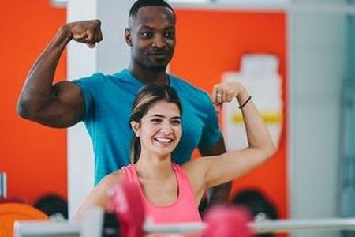
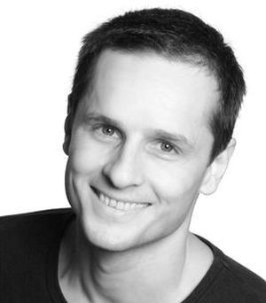

ÓRATÍPUSOK

TRX
A TRX edzés saját testsúlyos gyakorlatokkal dolgozó edzésforma, mely remekül formálja a test bármely izmát. A kitartást igénylő edzéseket jó hangulatban, egymást motiváló társakkal végezhetik látogatóink.

Személyi edzés
Elhivatott csapatunkban felkészült személyi edzők várnak, akik az edzettségi szinted felmérése után az igényeidhez igazodó, személyre szabott edzéstervet készítenek számodra.

Dance aerobic
Nálunk nem kell választanod a tánc és az aerobic között! Táncos aerobic óráink résztvevői mindig jókedvűek, ruganyosak, és sosem tévesztenek ritmust. Gyere és próbáld ki magad a dance-aerobicban is!
Jóga
Test-szellem-lélek harmóniája és ruganyossága alakítható ki a redszeres jógázással. A belső béke megélése olyan örömet ad, hogy aki egyszer átélte, mindig erre vágyik. Nálunk minden órán átélheted!
Ugrás a lap tetejére
ÓRAREND
| Óratípus |
Hétfő |
Kedd |
Szerda |
Csütörtök |
Péntek |
Szombat |
| TRX |
9:00-10:00 |
15:00-16:00 |
18:00-19:00 |
10:00-11:00 |
15:00-16:00 |
16:00-17:00 |
| Személyi edzés |
10:00-11:00 |
17:00-18:00 |
19:00-20:00 |
11:00-12:00 |
16:00-17:00 |
15:00-16:00 |
| Dance-aerobic |
11:00-12:00 |
16:00-17:00 |
17.00-18:00 |
18:00-19:00 |
17:00-18:00 |
18:00-19:00 |
| Jóga |
12:00-13:00 |
18:00-19:00 |
16.00-17:00 |
17:00-18:00 |
18:00-19:00 |
17:00-18:00 |
Ugrás a lap tetejére
Belépéshez kérem adja meg ügyfélazonosító számát és a jelszavát:
Az Ön aktuálisan nyilvántartott adatai:
Ugrás a lap tetejére
RÓLUNK
Egy éve megnyitott edzőtermünkben 800 nm2-en, és non-stop nyitvatartással várunk minden sportolni vágyót. Felkészült edzőinknek köszönhetően az egyéni igényekhez igazodó erősítésre éppúgy lehetőség van,
mint a csoportos edzésekre. Mindehhez a napi belépők mellett, 10 alkalomra szóló bérletvásárlási lehetőséget is kínálunk. Edzőink igény esetén életmódbeli tanácsadással,
valamint személyre szabott edzésprogramokkal segítenek, amelyhez táplálékkiegészítőket is ajánlani tudnak. A hozzánk látogatókat felkészült ügyfélszolgálatosok fogadják, akik segítik
az eligazodást, s az edzések végén regeneráló energiaitalokkal szolgálnak.
A nálunk töltött időt a közel jövőben megnyíló szauna és szolárium teszi majd még kellemesebbé. Hamarosan saját parkolórésszel is bővül létesítményünk.
Edzőtermünk a kerületben élők sportolási lehetőségének bővítése, valamint a rendszeres mozgás népszerűsítése mellett szintén elkötelezte magát. Ennek okán minden kerületi sportrendezvényen
résztveszünk, és támogatjuk a "Mozduljunk együtt" tömegsport mozgalmat.
Ugrás a lap tetejére
EDZŐINK

Kristóf
Szakedzőként lelkes elkötelezettje a TRX-nek. Óráit minden erősödni vágyó látogatónk örömmel és elégedettséggel veszi.

Laura
Nyolc éve működik személyi edzőként, emellett aktív testépítő, több hazai verseny győztese. Felkészültségét sokan méltatják.

Zalán
Képzett táncoktatóként és aerobic szakedzőként kezdte pályáját. Órái mindig vidám hangulatban és pezsdító ritmusokkal zajlanak.

Kata
A testi-lelki harmónia elsődleges számára. Az óráit látogatóknak nemcsak belső egyensúlyuk megteremtésével, de életmódbeli tanácsokkal
is segíteni tud.
Ugrás a lap tetejére
NEON FITNESS
Cím: 1183 Budapest, Thököly út 18.
Tel.: 1-250-2709; E-mail: neonfitness@uszi.hu; web: www.neonfitness.hu
© Body Béla, 2022